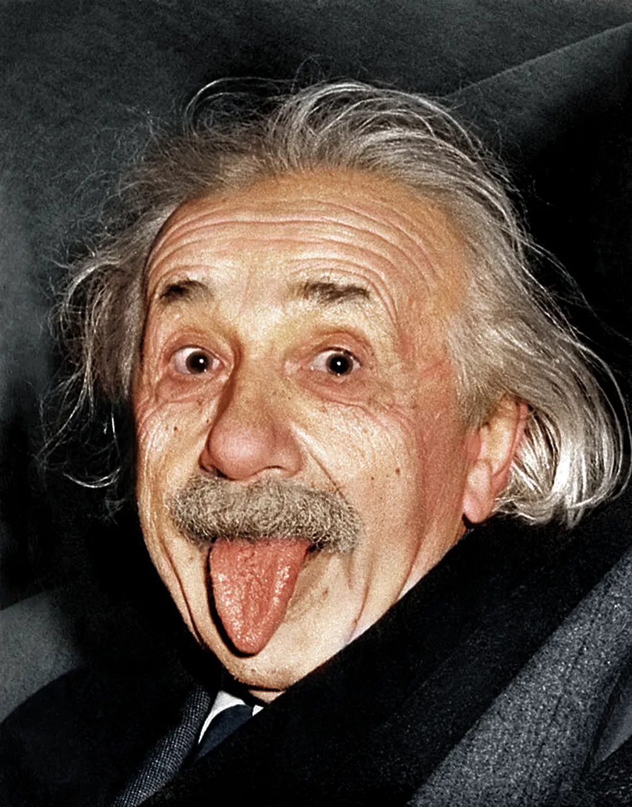
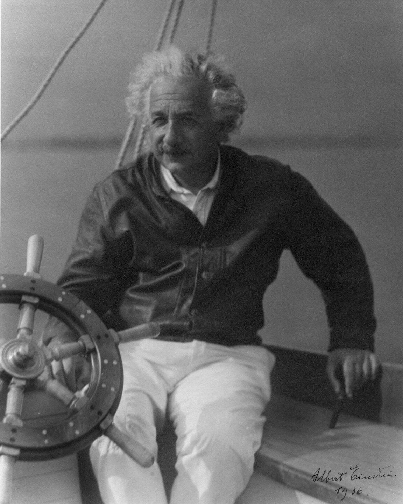
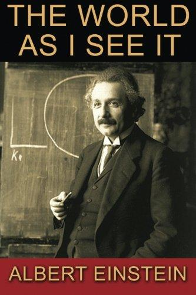
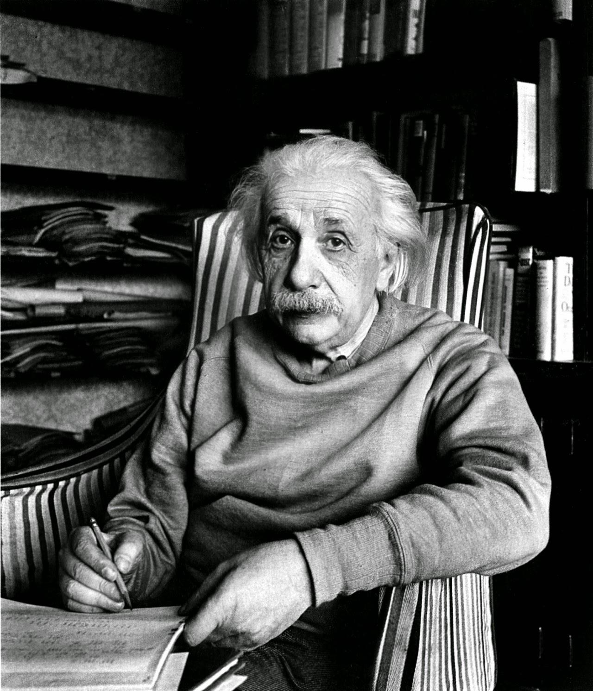

About Me

Albert Einstein
Albert Einstein (1879-1955) was a German-born theoretical physicist and one of the most influential scientists in history. He is best known for developing the theory of relativity, which changed our understanding of space, time, and gravity. His famous equation, E = mc², explains the relationship between mass and energy.
Einstein studied physics and mathematics at the Swiss Federal Polytechnic School in Zurich. In 1905, he published several important scientific papers, including his work on the photoelectric effect, Brownian motion, and special relativity. In 1921, he received the Nobel Prize in Physics for his explanation of the photoelectric effect.
Beyond his scientific achievements, Einstein was also passionate about music, especially playing the violin. He enjoyed sailing and often spent his free time thinking about science and philosophy. His curiosity, creativity, and contributions to physics continue to inspire scientists and students around the world.
Publications
Hobby

Playing the Violin
Einstein loved playing the violin. Music helped him relax and inspired his creativity.

Sailing
Einstein enjoyed sailing in his free time. He loved spending time on the water and enjoying the peaceful environment.
Gallery

Blog
-

The World As I See It
Category: Life & Philosophy
In this essay, Einstein shares his personal views on life, human values, and society. He discusses the importance of kindness, beauty, truth, and social responsibility. He also explains how curiosity and the search for knowledge give meaning to his life.
-

Religion and Science
Category: Science & Philosophy
In this article, Einstein explores the relationship between science and religion. He discusses how human beliefs develop and explains how science helps us understand the natural world. He also shares his thoughts on curiosity, knowledge, and the mysteries of the universe.